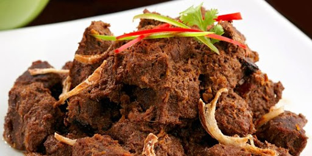

About Me
Hi, I am Khairul Halim, the owner and true lover of Minang cuisine behind the establishment of Rumah Makan Padang. This restaurant is not just a place to eat—it is a journey of taste. Every recipe we serve is born from family heritage, prepared with love, and served with the spirit of welcoming guests like family. From rendang cooked for hours, curry rich in spices, to sambal ijo with addictive spiciness—we prepare everything with the quality and authenticity of Minang flavors!
Technical Skills
Slow Cook Cooking Technique
Example: cooking kalio and rendang
Taste Balance
creates a distinctive and delicious taste
Expert in Making Sambal
Especially green chili sauce and red chili sauce, which have a hot, spicy taste.
Featured Projects

Cloud-Based E-commerce Platform
Padang food ordering service architecture. For aqiqah and wedding events.